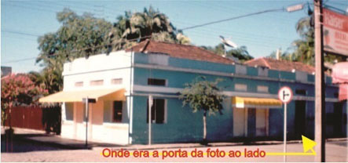
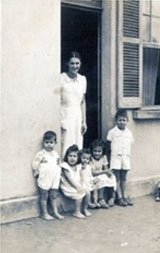

3B / LOJINHA 3B / LOJÃO 3B / LOJA 3B
Por Com. Felipe Nicolau
"Bom, Bonito e Barato!"
Esse era o refrão utilizado pelo Sr. Miguel Maceno quando se instalou na cidade de Morretes - Paraná, vendendo artigos que atualmente são vendidos pelas lojas de R$ 1,99.
O Sr. Miguel Maceno, primeirament teve como seu primeiro ponto de venda na Rua XV de Novembro ao lado do número 51, que era um açougue onde trabalhava o Sr. João Nicolau (o meu pai) que, inicialmente recebia carnes do matadouro de Morretes, sito a Reta do Porto, cujo abatedor era o Sr. Felix, que transportava as carnes em cima de carroça. Mais tarde as carnes passaram a ser fornecidas pelo frigorífico da Paraná Pecuária, sito em Curitiba, cujo dono era o Sr. Pedro Alípio de Camargo, pai daquele que foi o Senador Afonso de Camargo, e que eram transportadas por meio de caminhões com carrocerias frigoríficas.
O Sr. Pedro Alípio de Camargo e o Sr. Afonso de Camargo eram compadres do Sr. João Nicolau, pois haviam batizados o Sr. João Carlos Nicolau e o Sr. Ronald Nicolau, respectivamente.
 
Foto 1 - Família de João Nicolau,
fotografados pelo Sr. Afonso de Camargo.
*Conforme o relato do Sr. João Nicolau, ao lado do açougue havia um muro alto na extensão da largura do terreno, em frente ao qual o Sr. Miguel Maceno estendeu uma toalha na calçada e distribuiu os seus artigos para venda, utilizando-se do refrão "Bom, Bonito e Barato!". O Sr. João Nicolau vendo o esforço e empenho daquele homem resolveu lhe ajudar, fornecendo-lhe duas caixas de madeira, conhecidas como "caixas de querosene", que eram utilizadas para o transporte de latas de querosene e também uma porta antiga que havia na antiga "casa velha" existente no terreno.
Maceno então estendeu a toalha sobre a porta apoiada nas duas caixas de querosene e distribuiu os seus artigos sobre ela, melhorando assim a oferta e acesso aos compradores.
Mais tarde Maceno alugou um espaço na mesma Rua XV de Novembro, próximo ao açougue, mas do lado oposto da rua, ao lado da Alfaiataria do Sr. Honilson Madalozo, ( o "visionário" que construiu aquele que é hoje o Restaurante Madalozo às margens do Rio Nhundiaquara, após a ponte de ferro, conhecida como "Ponte Velha" em virtude da construção da ponte de concreto próxima a Igreja Matriz) e passou a chamar de "Loginha 3B", onde ampliou a oferta de artigos "Bons, Bonitos e Baratos". A aceitação inicial ao lado do açougue por parte dos clientes, cresceu exponencialmente ao ponto do Maceno vir adquirir a propriedade que era anteriormente um armazém de secos e molhados, cujos donos eram o Sr. Elias Daher e a Sra. Estelita Daher, onde atualmente está instalada a "Lojão 3B", na esquina da Rua XV de Novembro com a Rua Visconde do Rio Branco.
Acima está a versão contada pelo Sr. Antonio de Souza (Nico), filho do Sr. Joaquim de Souza, que era o gerente do Banco Comercial do Paraná, cujo prédio era em frente ao açougue. O Sr. Joaquim de Souza morava na parte superior do prédio, e tinha como filhos o Sr. Vicente, o Sr. Joaquim Filho (dono do Restaurante Ponte Velha), a Sra. Neli e o Sr. Antonio Carlos (Nico).
Nico escreve de uma posição privilegiada, pois da janela da sua residência assistiu o esforço e empenho do Sr. Miguel Maceno ao começar o embrião daquela que viria a ser a Loja 3B.
Morretes agosto de 2023
Com. Felipe Nicolau
- Licenciado em Artes Visuais pela UNESPAR (2015) e Bacharel em Museologia pela UNESPAR (2023); Auditor Líder de ISO 9000 acreditado pela: BRTÜV (2008 - Alemã), Nigel Bauer & Associates (2008 - Inglesa) e Rina (2016 - Italiana); Desenhista pelo "Curso de Dibujo" da Continental School - Los Angeles - Califórnia - USA (1973)
|